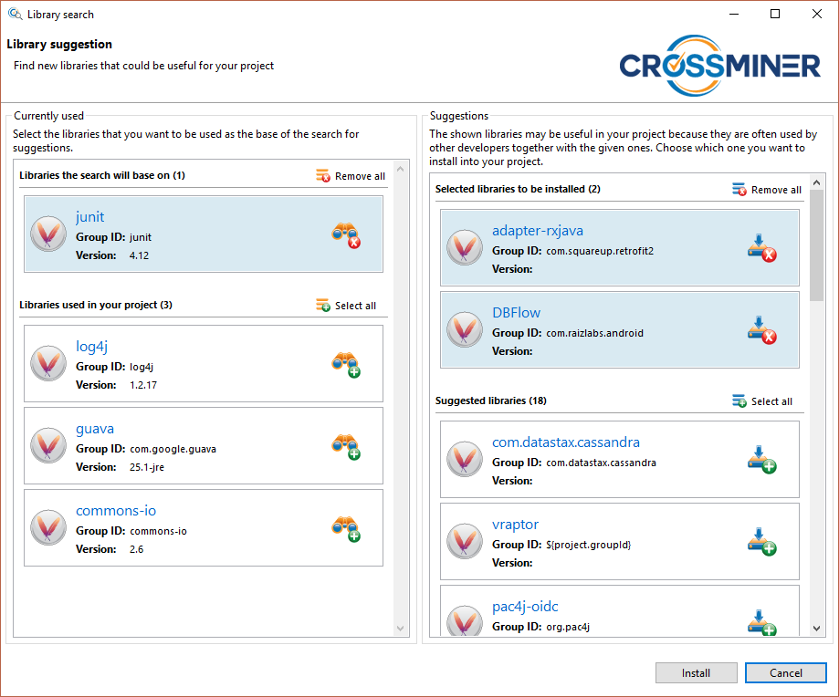
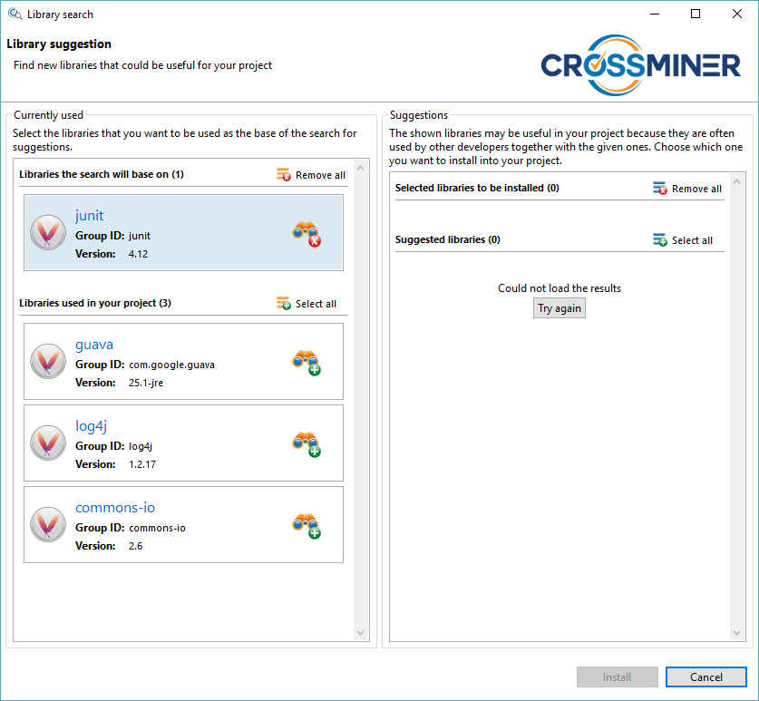

This dialog is split into two parts. On the left side you can see the currently used libraries in your project and on the right side there are the suggested libraries. Both the left and the right side contains their libraries in two separate groups. On the left side, in the upper group there are the libraries that has been selected to be used as the base of the search. The suggested libraries may vary by the different set of selected libraries. On the bottom there are the libraries that has not been selected yet. On the right side, in the lower group there are the libraries that the CROSSMINER suggested for you to use in your project.

Library search dialog - results

Every time you change the search parameters, so the set of libraries that
are used as the base of the search, the suggested libraries will be reloaded. If
something goes wrong so the libraries cannot be retrieved from the CROSSMINER server, a Try again button will be shown and by clicking that you
can initiate a new request to load them.
Library search dialog - selected to install

After selecting the set of libraries that you want to use in your project,
by clicking on the install button you can add them to your project. They
will show up among the dependencies in the project's pom.xml.
Library search dialog - try again